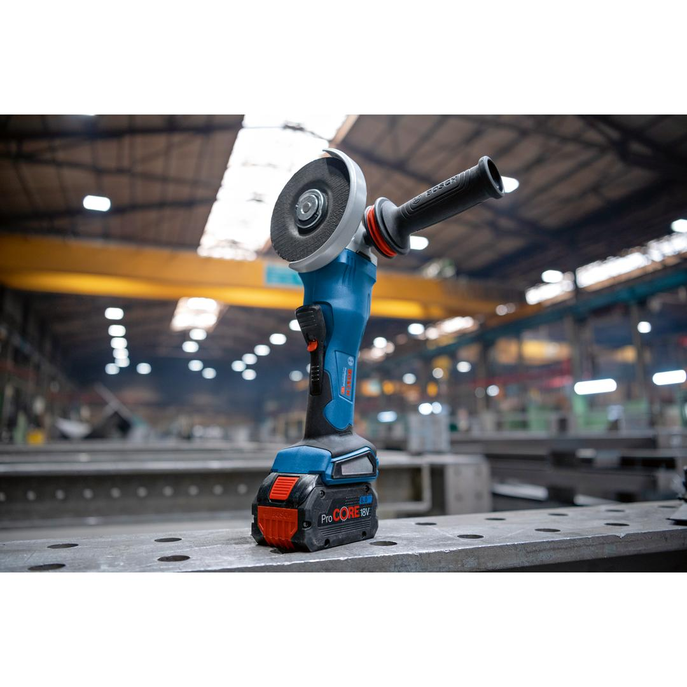
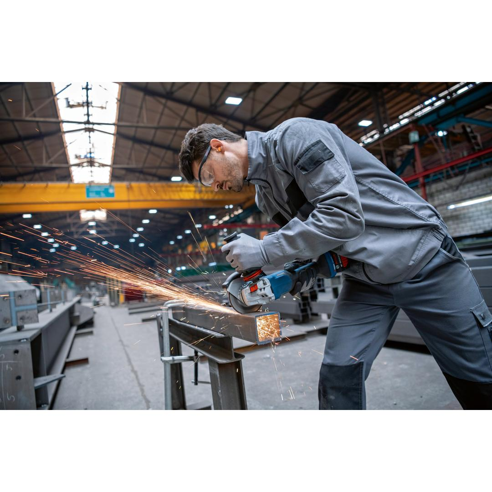
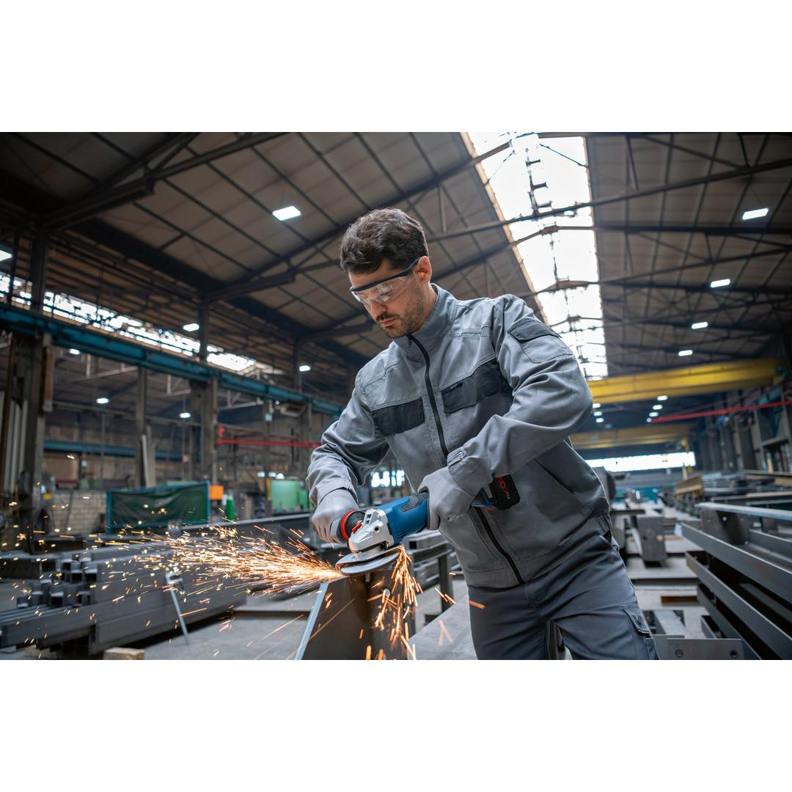
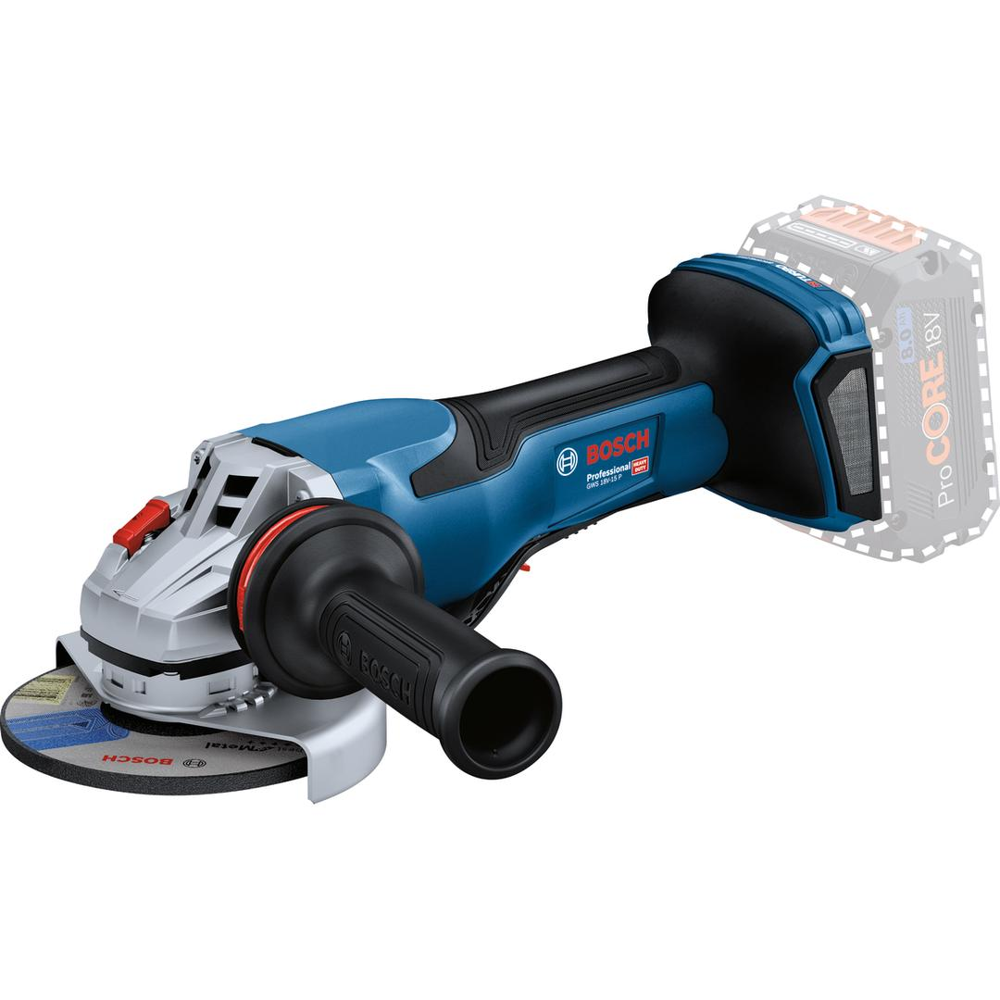

06019H6A00





| Noise level |
The A-rated noise level of the power tool is typically as follows: Sound pressure level 89 dB(A); Sound power level 97 dB(A). Uncertainty K= 3 dB. |
| Tool dimensions (width) |
265 mm |
| Tool dimensions (length) |
330 mm |
| Tool dimensions (height) |
119 mm |
| Battery voltage |
18.0 V |
| No-load speed |
9,800 rpm |
| Grinding spindle thread |
M14 |
| Bore size, diameter |
22.20 mm |
| Weight excl. battery |
2.2 kg |
| Disc diameter |
125 mm |
| Speed output no-load, nominal max. |
11000 rpm |
| X-LOCK |
No |
| BITURBO |
Yes |
BITURBO brushless angle grinder with PROtection switch – equal to 1,500 W corded power
In your job, do you need the freedom of a cordless tool that matches the supreme performance of a corded one? Our powerful GWS 18V-15 P Professional with BITURBO brushless technology delivers high-class cordless performance equal to 1,500 W corded power. Its PROtection switch ensures that the tool shuts down immediately when it is released. The intelligent brake system quickly brings the disc to a standstill, so you can put aside the tool with peace-of-mind. The angle grinder also comes with KickBack Control, Drop Control, soft start, Vibration Control, and quick-clamping nut to conveniently change accessories.
It is ideal for grinding metal or welding seams and for cutting metal, concrete, bricks, and tiles. For a low-dust work environment, use the GWS 18V-15 P Professional in combination with dust extractors GDE 125 EA-T Professional and GDE 115/125 FC-T Professional. Compatible with the Bosch Professional 18V System and with the multi-brand battery alliance AMPShare. For maximum power use a ProCORE18V ≥ 5.5 Ah.